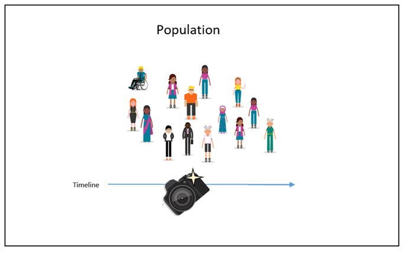

# This is the script for Lab Week 11
setwd("C:/Users/lachenar/OneDrive - Colostate/Documents/GitProjectsWithR/csu-arec-330.github.io/materials/unit_02/week_03")
getwd() # Confirm I am working in the proper directory.
# Load required libraries
library(dplyr)
library(ggplot2)
library(GGally)
library(factoextra)
library(readr)
library(knitr)
# Read in the shopper_info dataset
# This dataset contains detailed information on shoppers and their transactions for July 2023
shopper_info <- read_csv("https://csu-arec-330.github.io/materials/unit_02/inputs/shopper_info.csv")
# Separate data file with shopper ID and their zipcode
shopper_zip <- read_csv("https://csu-arec-330.github.io/materials/unit_02/inputs/shopper_zip.csv")
# Read in the GTIN dataset
# This file links products to their Global Trade Item Numbers, akin to SKUs or UPCs
gtin <- read_csv("https://csu-arec-330.github.io/materials/unit_02/inputs/gtin.csv")
# Read in the store_info dataset
# Contains details about each store, linkable to shopper_info via store_id
store_info <- read_csv("https://csu-arec-330.github.io/materials/unit_02/inputs/store_info.csv")
# Join the data frames together
store_shopper_gtin_left <- left_join(store_info, shopper_info, by = "store_id") %>%
left_join(gtin, by = "gtin")
# Look at the raw count of observations after join
total_observations <- nrow(store_shopper_gtin_left)
print(paste0("Total observations of raw data: ", total_observations))
# Look at the number of distinct store id's prior to cleaning the data
store_count_raw <- length(unique(store_shopper_gtin_left$store_id))
print(paste0("Count of distinct stores in raw data: ", store_count_raw))
# Clean and transform the raw data
clean_data <- store_shopper_gtin_left %>%
# Remove observations with negative or zero unit price (e.g., returns or invalid entries)
filter(unit_price > 0) %>%
# Remove observations of stores missing shopper IDs
filter(!is.na(shopper_id)) %>%
# Calculate total spending per line item
mutate(total = unit_price * unit_quantity) %>%
# Convert transaction_set_id and transaction_item_id to integers without decimals
mutate(transaction_set_id = format(transaction_set_id, scientific = FALSE, trim = TRUE),
transaction_item_id = format(transaction_item_id, scientific = FALSE, trim = TRUE)) %>%
# Arrange data by store_id and zip_code
arrange(store_id, zip_code)
# Check how many distinct shoppers are in the clean dataset
unit_of_analysis <- length(unique(clean_data$store_id))
print(paste0("Unit of analysis (store-level): ", unit_of_analysis))
# Summarize metrics at the store level
store_summary <- clean_data %>%
group_by(store_id) %>%
summarise(
total_sales = sum(unit_price * unit_quantity, na.rm = TRUE), # Total revenue
unique_customers = n_distinct(shopper_id), # Number of unique customers
product_diversity = n_distinct(gtin), # Number of unique products sold
fuel_transactions = sum(is.na(gtin) | gtin == 0), # Number of fuel transactions
total_transactions = n_distinct(transaction_set_id), # Total number of transactions
fuel_share = fuel_transactions / total_transactions, # Fuel share of transactions
.groups = "drop"
) %>%
left_join(store_info %>% select(store_id, chain_size), by = "store_id") %>% # Add chain size
filter(!is.na(chain_size))
# Final dataset: merge summaries if desired
final_dataset <- store_summary %>%
left_join(store_info %>% select(-chain_size), by = c("store_id")) %>%
arrange(store_id, zip_code)
sumstats <- store_summary %>%
summarise(
mean_sales = mean(total_sales),
mean_customers = mean(unique_customers),
mean_products = mean(product_diversity),
mean_fuel_share = mean(fuel_share),
mean_chain_size = mean(chain_size),
.groups = "drop"
)
# I noticed that the distribution of my store attributes is very skewed, so I want to rescale them.
final_dataset <- final_dataset %>%
mutate(
log_customers = log(unique_customers + 1),
log_sales = log(total_sales + 1),
log_products = log(product_diversity + 1),
log_chain_size = log(chain_size + 1)
)
# Run the ggpairs() command
final_dataset %>%
select(log_customers, log_sales, log_products, fuel_share, log_chain_size) %>%
ggpairs()
# Prepare data for clustering
cluster_data <- final_dataset %>%
select(log_customers, log_sales, log_products, fuel_share, log_chain_size)
cluster_scaled <- scale(cluster_data)
# Use two common methods to help choose the number of clusters:
# Elbow Method
fviz_nbclust(cluster_scaled, kmeans, method = "wss")
# Silhouette Method
fviz_nbclust(cluster_scaled, kmeans, method = "silhouette")
# Perform k-means clustering on logged and scaled data
set.seed(123)
kmeans_fit <- kmeans(cluster_scaled, centers = 4, nstart = 25)
# Add cluster to dataset
final_dataset$cluster <- factor(kmeans_fit$cluster)
fviz_cluster(kmeans_fit, data = cluster_scaled, geom = "point", ellipse.type = "norm")
# Use the original (non-logged) variables because you're summarizing actual store characteristics — not the transformed versions.
final_clusters <- final_dataset %>%
group_by(cluster) %>%
summarize(across(c(unique_customers, total_sales, product_diversity, fuel_share, chain_size), mean))
print(final_clusters)
final_dataset %>%
select(cluster, city) %>%
group_by(cluster, city) %>%
summarize(n = n(), .groups = "drop") %>%
group_by(cluster) %>%
slice_max(order_by = n, n = 5) %>%
ungroup() %>%
kable()
# =======================================================
# WHAT DO YOUR CLUSTERS REVEAL?
# =======================================================
# Join cluster labels to store_info (keeping only cluster info)
most_frequent_purchase <- store_info %>%
# Join cluster info only
left_join(final_dataset %>% select(store_id, cluster),
by = c("store_id")) %>%
# Filter out rows with missing cluster
filter(!is.na(cluster)) %>%
# Join in shopper info
left_join(shopper_info, by = "store_id") %>%
# Join in produt info
left_join(gtin, by = "gtin") %>%
# Count purchases by cluster and subcategory
group_by(cluster, gtin, subcategory) %>%
filter(!is.na(subcategory)) %>%
summarize(purchase_count = n(), .groups = "drop") %>%
# Get the top subcategory in each cluster
group_by(cluster) %>%
filter(purchase_count == max(purchase_count)) %>%
ungroup() %>%
select(-gtin)
View(most_frequent_purchase)
# Join most_frequent_purchase with final_clusters and then write to csv
final_clusters_out <- final_dataset %>%
left_join(most_frequent_purchase, by = "cluster")
write_csv(final_clusters_out, "final_clusters_out.csv")Week 11 Lab: Visualizing Results in Tableau

This Lab Contributes to Course Objectives: 1, 3, 4, 5, 7, 8
Learning Objectives Tableau
Investigate the meaning of clusters from cluster analyses and support your argument using visualizations
Apply Tableau’s cluster analysis
Describe the model used in Tableau’s cluster analysis
Summarizing Data in Tableau
Last week in R, we used k-means clustering to segment stores into four[^Note: I have aligned Week 10 Lab with Week 11 Lecture so all of the output is replicable and you can follow along in the videos.] distinct groups based on their customer base, total sales, product diversity, fuel transaction share, and chain size. These clusters appear to reflect different store strategies:
Cluster 1: Fuel-dominant, low-volume stores
Cluster 2: Mid-volume, high-diversity stores
Cluster 3: High-volume, high-sales stores
Cluster 4: Low-volume, low-fuel stores
Lab Script for Week 11: Visualizing Results in Tableau
In this video, we’re going to start exploring our store-level cluster data visually using Tableau. Our goal is to better understand the characteristics (e.g., unique customers, total transactions, total sales, etc.) of each store cluster by creating simple, intuitive charts that help us build a narrative around store types.
We’ll be working with the file final_clusters_out.csv, which contains the cluster assignments we generated in R and reviewed during lecture this week.
First step: Make sure Clusters are Discrete Dimensions
Before you build anything, check how Tableau is reading your cluster field:
By default, Tableau might treat
clusteras a continuous measure, which is used for numeric calculations.But clusters are categorical groupings — not numbers we want to average or sum.
So we need to convert
clusterinto a discrete dimension so that Tableau treats each cluster as a distinct group for comparison.
To do this:
Right-click the
clusterfieldSelect Convert to Dimension
Then, right-click again and choose Convert to Discrete, if needed
What we’re building:
We’ll start by creating a bar chart that compares store-level attributes — like:
- Total sales
- Unique customers
- Total transactions
Grouped by cluster, this visualization will help us:
- See how the clusters differ in measurable ways
- Support the interpretation we developed from our R output
- Begin to tell a data-driven story about different types of convenience stores in the dataset
Visualizing Clusters in Tableau
In this next step, we’re going to visualize our store-level data in Tableau using a scatter plot to explore how total sales and total transactions relate to the clusters we created in R.
First, I’ll create a new variable called “Sales Category” using Create a Calculated Field. This groups stores into three categories:
Low Sales (< $100)
Medium Sales ($100–550)
High Sales (> $550)
Then, we’ll build a scatter plot with:
X-axis: Sales Category
Y-axis: Total Transactions
Color: Cluster assignment
Why this matters:
This visualization helps us see how stores compare across sales and transaction volume — and how those metrics relate to cluster membership.
While Cluster 2 stores (in orange) tend to appear more often in the High Sales group, we also see variation across all clusters within each sales category.
This shows that cluster assignment isn’t based on just one metric — it reflects a combination of store characteristics like customers, product diversity, fuel share, and chain size.
It also highlights how Cluster 2 stores tend to have higher total transactions, suggesting they might serve more frequent or multi-item shoppers.
Ultimately, this kind of visualization supports better storytelling about what makes each store type unique — and helps us move beyond simple one-variable summaries when thinking about store performance.
Using Tableau’s Clustering Tool
It turns out that you can apply K-means clustering in Tableau! Unfortunately you cannot apply other clustering techniques, which is a limitation of doing this in Tableau instead of R. But, you can quickly and effectively perform fairly simple clustering analysis within Tableau. Read more about Tableau’s clustering algorithm (and see a tutorial) here.
Important
This section is not about using Tableau to create clusters to use in your project.
The purpose of this section is to show you:
that clustering is possible in Tableau, but limited, and
that R is a more powerful and customizable tool for performing cluster analysis.
For your project, you should only use the cluster assignments generated in R (e.g., from final_clusters_out.csv). Do not use Tableau’s built-in clustering tool to create new clusters.
Clusters in a Filled Map:
Open a new sheet in the workbook connected to your analysis dataset (
final_clusters_out.csv).Move
Zip Codeto the Columns Shelf. Select Show Me a Filled Map.Drag all the fields used in your cluster analysis to the Detail card (
Fuel Share,Log Chain Size,Log Customers,Log Products,Log Sales).Go to the
Analyticstab on the left and dragClusteronto your map (drop it on the pop-up window that appears).
You can let Tableau automatically determine the number of clusters, or you can assign a number of clusters. (The link above offers details on how Tableau determines the optimal number of clusters.)
By default, Tableau has created 4 clusters, but it is not immediately clear what these clusters represent. One way to understand these different clusters is by clicking the dropdown menu for our cluster variable and selecting
Describe Clusters. Here you can see summary statistics across all the variables used to create the clusters.
Clusters in a Symbol Map:
Open a new sheet in the workbook connected to your analysis dataset (
final_clusters_out.csv).Move
Longitudeto the Columns Shelf andLatitudeto the Rows Shelf. Make sure they are both set as Dimensions.Drag all the fields used in your cluster analysis to the Detail card (
Fuel Share,Log Chain Size,Log Customers,Log Products,Log Sales).Go to the
Analyticstab on the left and dragClusteronto your map (drop it on the pop-up window that appears).
You can let Tableau automatically determine the number of clusters, or you can assign a number of clusters. (The link above offers details on how Tableau determines the optimal number of clusters.)
By default, Tableau has created 4 clusters, but it is not immediately clear what these clusters represent. One way to understand these different clusters is by clicking the dropdown menu for our cluster variable and selecting
Describe Clusters. Here you can see summary statistics across all the variables used to create the clusters.